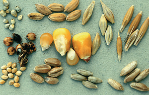

ⲛⲁⲡⲣⲉ, ⲛⲁⲡⲛⲉ (PS), ⲛⲉⲡⲣⲉ S, ⲛⲁⲫⲣⲓ B, ⲛⲉⲡⲣⲓ F nn f, grain, seed: Mt 13 31 BF (S ⲃⲗⲃⲓⲗⲉ) of mustard, Jo 12 24 B (SA2 do) of wheat κόκκος; Lev 19 10 B (S do), Is 65 8 B (S do) single grape ῥώξ; Bor 265 93 S ⲟⲩⲛ. ⲛⲧⲉ ⲡⲉⲥⲙⲁϩ, PMéd 190 S ⲡⲓⲡⲓ (l ? ⲕⲓⲕⲓ) ⲛⲉⲡⲣⲉ, P 12914 124 S found ⲟⲩⲛ. ⲛⲥⲟⲩⲟ on palace floor = C 41 16 B, PS 187 ff S shall seem (as small) as ⲟⲩⲛ. ⲛϣⲟⲓϣ grain, speck of dust, DeV 85 B ⲛⲓⲛ. ⲛϣⲱ of sand on shore. In name (or ? place): Κουννεπρεῖ (Preisigke). Cf ? ⲉⲃⲣⲁ.
(noun feminine)
anatomy
grain, seed [κοκκος]

complete
228a
236a
ⲛⲁⲫⲣⲓ B v ⲛⲁⲡⲣⲉ.
See also:
| view | ϭⲣⲟ(ⲟ)ϭ, ϭⲗⲟϭ S ϭⲣⲁϭ LF ϫⲣⲟϫ B plural: ϭⲣⲱ(ⲱ)ϭ, ⲕⲣⲱⲱϭ S plural: ϭⲣⲟⲟϭ SF plural: ϫⲣⲱϫ B plural: ϭⲣⲱⲱϫ F | (noun masculine) seed [σπερμα, σπορος]112 |
| view | ⲉⲃⲣⲁ, ⲃⲣⲁ, ⲃⲣⲉ S ⲃⲣⲉ SA ⲃⲣⲁⲓ, ⲙⲃⲣⲁⲓ, ⲉⲫⲣⲁⲓ, ⲉⲙⲣⲁⲓ B ⲃⲣⲉⲉⲓ F plural: ⲉⲃⲣⲏⲟⲩⲉ, ⲃⲣⲏⲩⲉ, ⲃⲣⲏⲏⲩⲉ S | (noun masculine) seed [σπερμα, σπορος]636 |
| view | ϥⲣⲉ B | (noun masculine) seed2059 |
| view | ⲁⲗ SAB ⲉⲗ F | (noun masculine) pebble [ξηφος]
hail stone [χαλαζα] testicle spot, patch of skin, eruption seed420 |
| view | ⲛⲁϫⲡ B | (noun) stone, kernel of fruit3016 |
| view | ϣⲃⲓⲛ B | (noun) grain1864 |